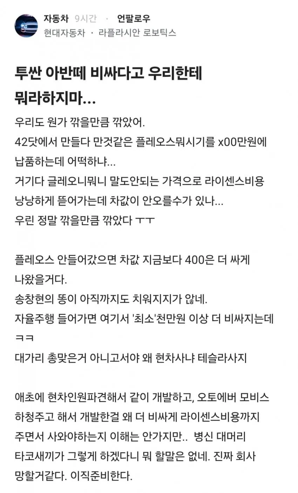
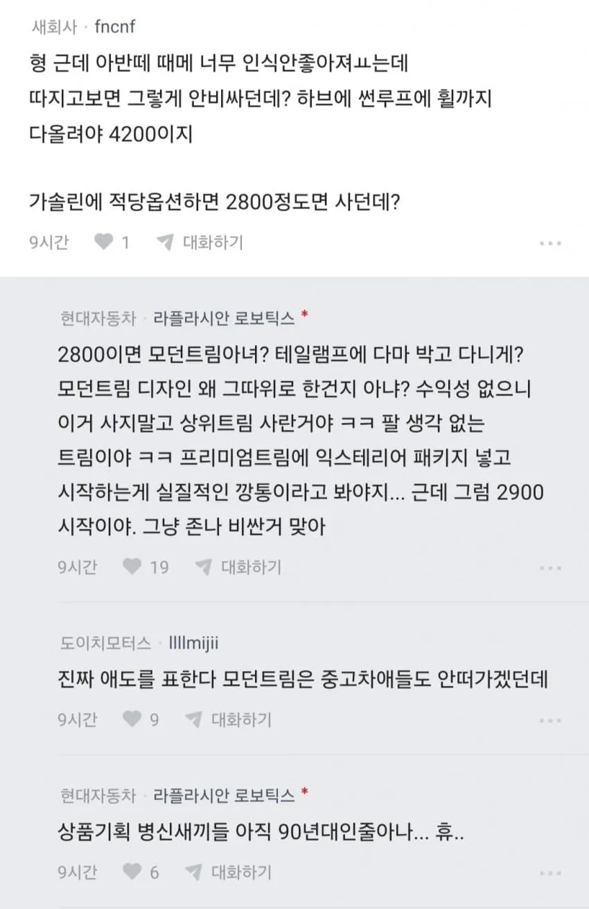
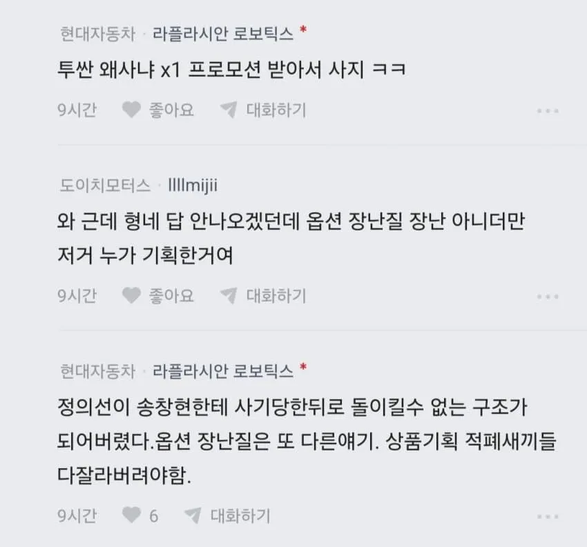
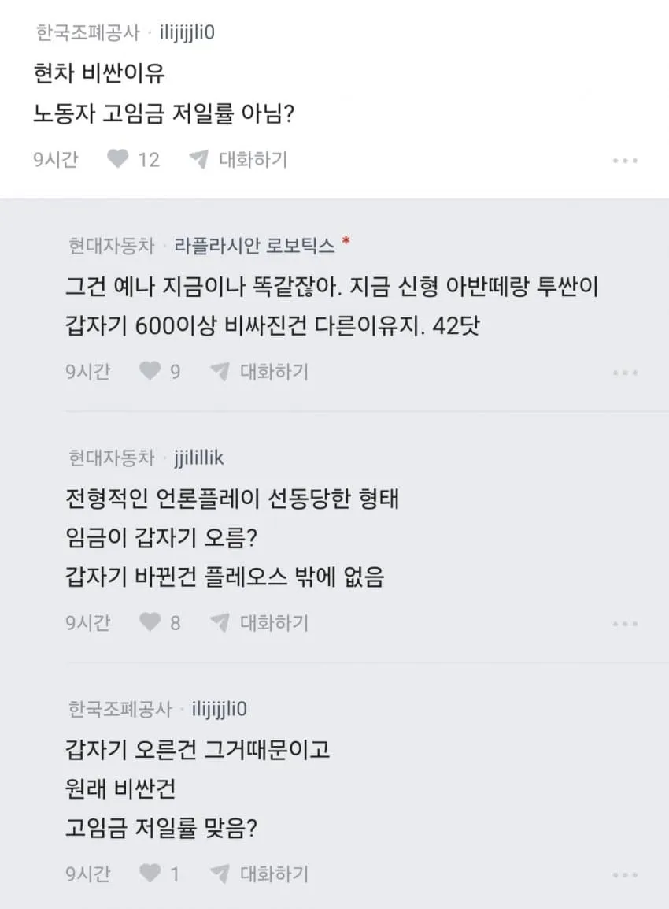
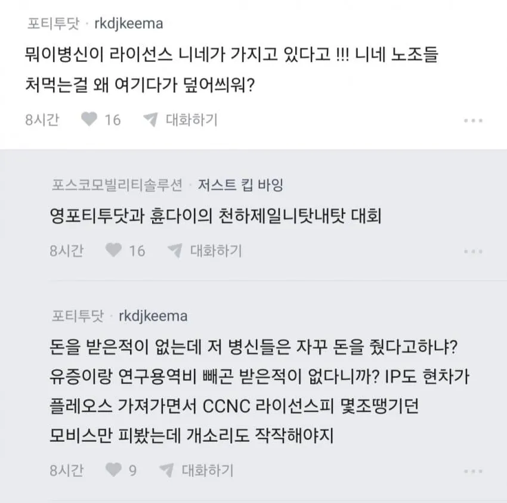
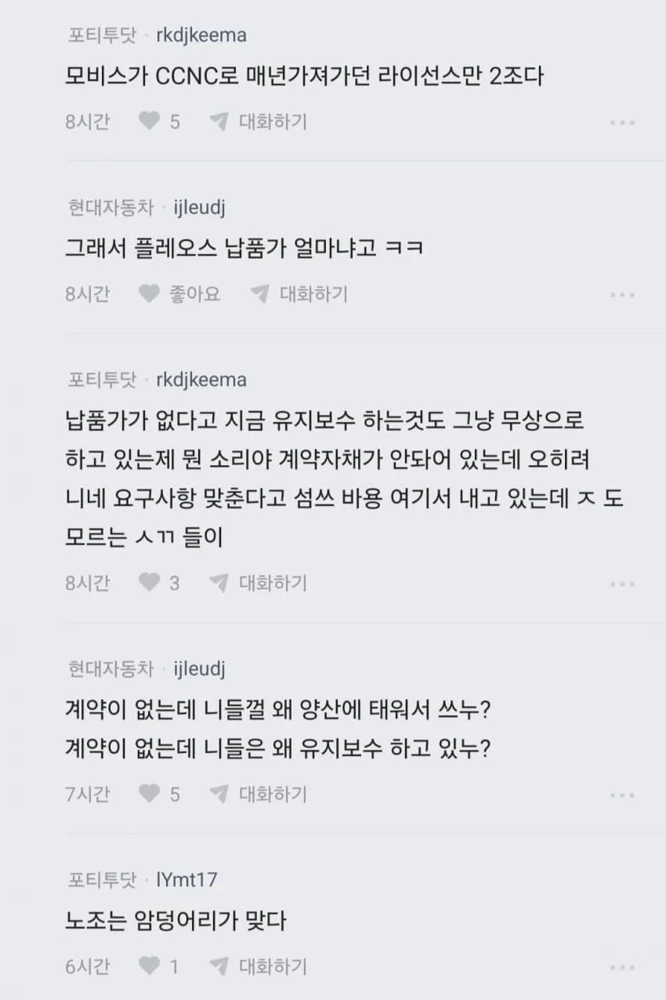
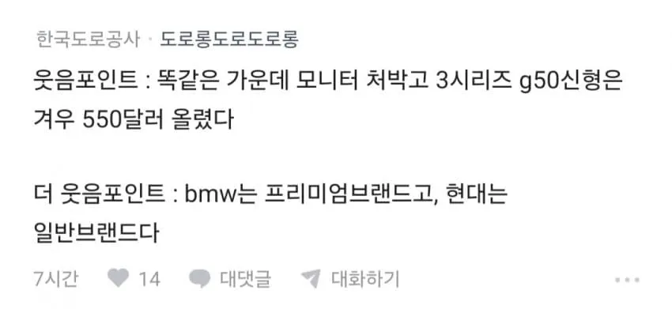
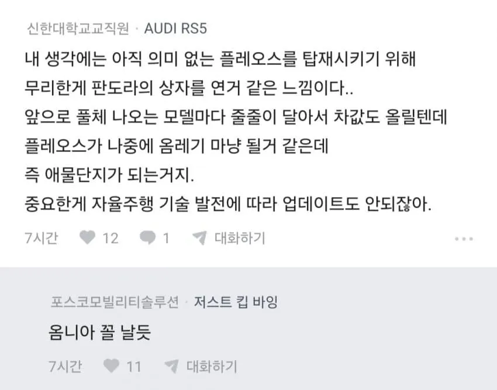

플레오스 커넥트는 진짜 옴니아 느낌남..








플레오스 커넥트는 진짜 옴니아 느낌남..
42닷 어짜피 자회사라 지네들끼리 망치고 지네들끼리 해먹는거지 뭐
블라 보니까 42닷 계약을 보면 2026년에 옴니아를 아이폰 듀오 가격에 산 급이라던데 ㅋㅋ 그냥 내부 평가 체계가 망가졌나 싶음
그럼 마이너스옵으로 플레오스 빼고 팔든가 ㅋㅋㅋ
그럼 아무도 플레오스 안 낄 걸 아니까 그러는 거 아님?
응 비싸면 안사면 그마니야아아
노조 생산성 병신같은건 팩트 아닌가
그건 맞는데 아반떼가 한세대만에 800오른게 노조탓은 아니지
노조때문에 오른 가격은 이미 반영되있던거고
이번에 올라서 욕먹은건 42닷 플레오스 때문인데 노조탓하니 역겨운거지 ㅋㅋ
지금 부터 다음 풀체 주기는 7년동안은 지금차로 버티는거 추천 그냥 과도기 잠깐 지나가는 산물임 차라리 돈을 더 받더라도 자율주행 확실히 나오는 차량os를 사야함 저건 진짜 ccnc 시즌2임
K8하브 산타페 하브 가성비갑..
k8하브 ㅈㄴ예쁜데다 쌔끈하고
중고차똥값이라 사고싶은데 장거리는 하브아무의미없데서 ㅅㅂ 전기차각보는중..
저 포티닷 직원이 말하는건 근거없는이야기인건가?
뭐 내부 사정이야 현직자가 더 잘 알겠지만 현대 댓글마냥 이미 완성차에 플레오스 박아서 나가는데 계약/납품가가 없다는건 말이 안되긴 해
플레오스 쳐넣고 자율주행 생각했으면 수입차처럼 레벨2+대비 카메라,라이다,자율주행칩이라도 쳐달고 나중에 법이 바뀌던가 기술실증능력이 올라왔을때 업데이트로 풀어버려야되는데 지금 그딴거 달고 나오지도 않고 출시했으면 그냥 껍데기 씌운 ccnc2지 ㅋㅋㅋ
나는 불과 1년전까지 자칭 삼성직원이라는 놈들이 삼성망한다고 했던걸 생생하거 기억하기때문에 중립임
병신같은 모니터 박고 600 800 오른건 ㄹㅇ ㅋㅋㅋㅋㅋ
42닷 지분이 현기친건데 뭔 개소릴 저리 길게써놨누
gn7 막차 탄거를 진짜 다행으로 생각한다 내인생에 현대는 이제 없다
그냥 x s 타면 해결 됨 ㅋㅋ
차들이 다 많이 비싸다......1700에 삼각떼 사서 7년정도 타고있는데 다음차 사기가 두렵다...